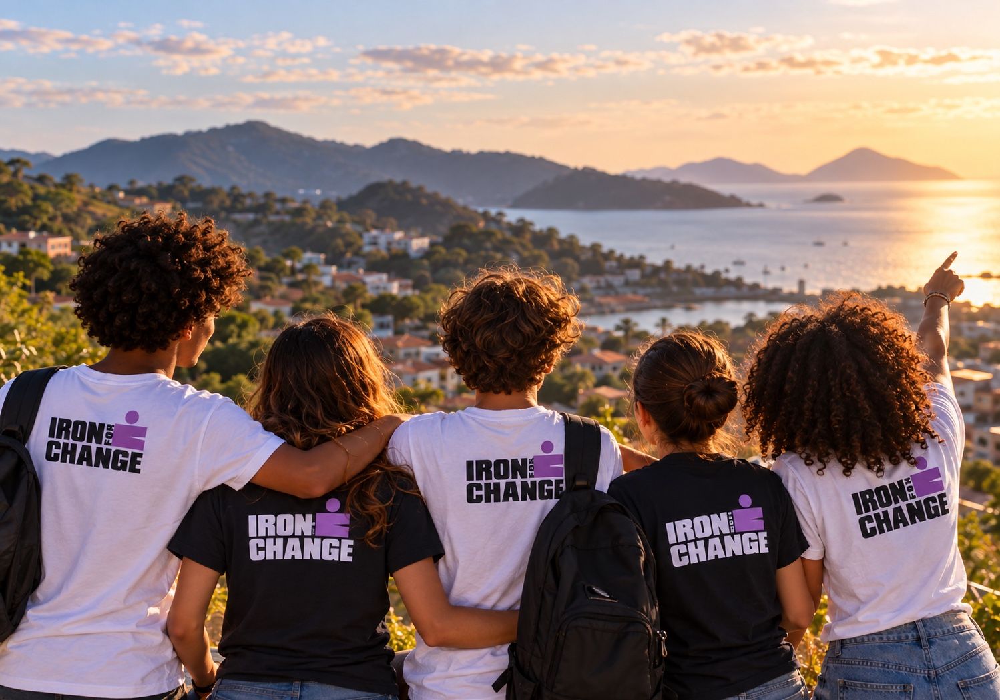

Uma metodologia viva de 44 semanas que desenvolve jovens da consciência individual à transformação real do território.
Vivências de diálogo, escuta empática e autocuidado na praia

Jovens protagonistas diagnosticando e transformando seu próprio território
Adolescentes enfrentam desafios cada vez mais complexos que comprometem seu desenvolvimento e o futuro das comunidades: sofrimento psíquico, bullying, falta de perspectiva e baixa participação cidadã.
O Iron For Change atua como uma incubadora viva. Conectamos esporte, saúde mental, autoconhecimento e cidadania para que os jovens criem soluções sustentáveis e regenerativas para os desafios do seu próprio território.
Escuta empática, conexão genuína e desenvolvimento socioemocional em contato com a natureza.
Autocuidado, saúde mental, alimentação consciente e conexão com o corpo.
Liderança autêntica, cidadania ativa e voz ativa para liderar transformações.
Metodologias participativas, ideação criativa e prototipagem de projetos.
Soluções concretas que deixam legados sociais, comunitários e ecológicos duradouros.
Conheça nossa história, a raiz médica e socioemocional com a Dra. Maisa Hortal e o impacto no Ironman Brasil.
Entenda a essência e a visão por trás da incubadora de líderes e transformação de vidas.
Dra. Maisa Hortal apresenta a fundamentação em saúde integral, pertencimento e impacto social.
Como conectamos a energia e resiliência do esporte de alta intensidade à transformação comunitária.
Conecte sua empresa, fundação ou instituição pública ao Iron For Change e impulsione jovens protagonistas.
Da consciência individual à transformação do território:
jovens que se conhecem, pertencem, imaginam, constroem e regeneram realidades.
Ciclo anual contínuo com 44 semanas letivas e recesso de 2 semanas planejado.
Desenvolvemos parcerias sob medida para empresas, fundações, editais e prefeituras com métricas claras de impacto socioemocional e comunitário.
Os seis pilares éticos e metodológicos que sustentam cada encontro, atividade e decisão pedagógica do Iron For Change.
Os adolescentes não são meros beneficiários passivos. Eles são os autores, formuladores e executores diretos das mudanças que desejam ver no mundo.
A teoria só existe para servir à prática. O aprendizado ocorre a partir de vivências reais, resolução de problemas concretos e reflexão contínua.
Valorização das diferentes histórias, talentos e origens. O poder transformador surge da cooperação generosa e do trabalho em equipe.
A comunidade, o bairro e o meio ambiente local são a principal sala de aula. É no contato com o território que o jovem desenvolve empatia e senso de pertencimento.
Toda ação deve estar alinhada a valores éticos, integridade humana e saúde integral. Agir com clareza de intenção e foco no bem comum.
Não basta apenas não causar danos; é preciso regenerar as relações humanas, a saúde dos jovens e a vitalidade socioecológica dos territórios.
Formatamos categorias de apoio para dialogar com diferentes realidades: investidores institucionais, editais, bolsas de apoio e doadores individuais.
Aporte direto para a estrutura operacional, equipe técnica e viabilização das 44 semanas de atividades formativas da turma.
Garantia de permanência dos jovens: apoio para alimentação saudável em todos os encontros, transporte e auxílio aos adolescentes.
Conexão com fundações, institutos sociais e editais de fomento à juventude, saúde mental e sustentabilidade regenerativa.
Profissionais e especialistas que doam tempo e conhecimento para orientar os Change Projects criados pelos jovens.
Cessão de locais para oficinas, materiais pedagógicos, equipamentos de mídia e serviços para a viabilização das ações.
Articulação com novas pontes de mercado, lideranças comunitárias e oportunidades de estágio e inserção para os jovens.
Juntos, formamos jovens protagonistas.
Juntos, regeneramos territórios.
Organizações, laboratórios acadêmicos e iniciativas que somam forças com o Iron For Change para impulsionar o protagonismo jovem, a saúde integral e a regeneração ambiental.